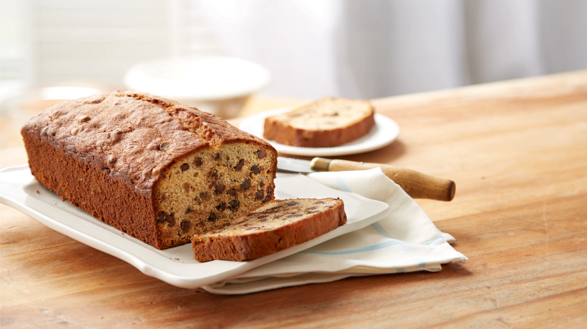

Banana Bread

Bake your very own loaf of Chocolate Chip Banana Bread! Fit for just about any party, fundraising event, holiday or after-dinner dessert time, this delectable chocolate and banana bread offers the perfect balance of fluffy, sweet and chewy.
Ingredients
- 2 cups of all-purpose flour
- cup banana mashed ripe (2 to 3 medium)
- 1 cup sugar
- 1/2 cup shortening
- 2 eggs
- 1 tsps baking powder
- 1 tsp salt
- 1/2 tsp baking soda
- 1 cup semi-sweet chocolate chips
Instructions
- Heat oven to 350°F. Grease bottom only of 9x5-inch loaf pan.
- Combine all ingredients except chocolate chips in large bowl; blend well on medium speed of mixer. Stir in small chocolate chips. Pour batter into prepared pan.
- Bake 60 to 65 minutes or until wooden pick inserted in center comes out clean. Cool 10 minutes; remove from pan. Cool completely on wire rack.
Return to top
Return to main page